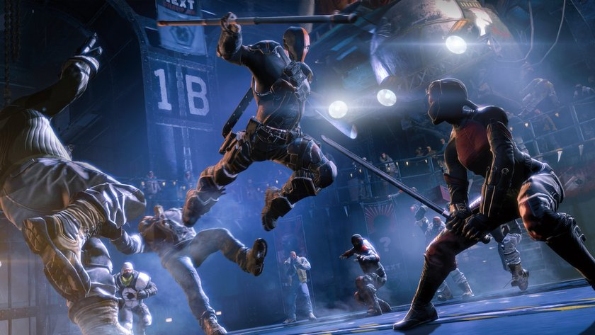

Batman Arkham Origins
Batman: Arkham Origins is a 2013 action-adventure video game developed by Warner Bros. Games Montréal and released by Warner Bros. Interactive Entertainment for Microsoft Windows and the PlayStation 3, Wii U and Xbox 360 video game consoles. Based on the DC Comics superhero Batman, it is the successor to the 2011 video game Batman: Arkham City and is the third main installment in the Batman: Arkham series. It was released worldwide on October 25, 2013.
Batman: Arkham Origins features an expanded Gotham City and introduces an original prequel storyline set several years before the events of Batman: Arkham Asylum and Batman: Arkham City, the first two critically acclaimed games of the franchise. Taking place before the rise of Gotham City’s most dangerous criminals, the game showcases a young and unrefined Batman as he faces a defining moment in his early career as a crime fighter that sets his path to becoming the Dark Knight. As the story unfolds, players will meet many important characters for the first time and forge key relationships.
Arkham Origins is an open world action-adventure game that incorporates elements of stealth game tactics. Batman can use his cape to glide around Gotham City, and he can use the grapnel gun's retracting rope to attach to out-of-reach ledges and extend his flight. Some gadgets obtained in previous Arkham games are present at the start of Arkham Origins, while others become available during play. Returning gadgets include: the Cryptographic Sequencer, which is used for hacking security consoles; the Batarang, a throwing weapon; the Batclaw, used for hooking on to surfaces; Smoke Pellets, used for stealthy exits and entries; Explosive Gel, used to create openings in surfaces; the Disruptor, which can remotely disable guns and explosive mines; and the Grapnel Accelerator, an earlier version of the Grapnel Boost. New equipment in Batman's arsenal include: the Remote Claw, which allows Batman to target two objects and pull them together allowing him to throw enemies into each other or hit them with objects, while tethering two walled-points together creates a tightrope that Batman can traverse; the Shock Gloves, which allow Batman to block electric attacks, instantly disable some enemies and stun shielded ones, and short circuit some objects within the environment; and the Concussion Detonator, capable of stunning large enemy groups.
The game introduces a fast travel system, allowing Batman to remotely summon his plane, the Batwing, to transport him to other areas of the game world quicker than gliding or grappling can allow. Enemy tower installations prevent Batman from summoning the craft in some areas and must first be disabled using various gadgets and abilities to make the Batwing available; the Batwing is not player controlled. Some towers can only be disabled when the player has obtained the necessary equipment.
Arkham Origins offers side missions including: "Crime in Progress", where Batman can assist the Gotham City Police Department (GCPD) to improve his reputation by accomplishing tasks such as rescuing police officers from a gang or preventing an informant being thrown to his death; "Most Wanted" allows Batman to pursue villains outside of the main story such as Anarky, who plants bombs around city. The Dark Knight system offers tasks of escalating difficulty that promote improvement in stealth and combat. Additionally, Batman's radio scanner also allows him to locate side missions. Completed side missions are rewarded with experience points and upgrades to Batman's equipment. The game features collectible objects and puzzles similar to the Riddler challenges of previous games, orchestrated by Enigma, prior to taking on his villainous Riddler identity. Collectible objects appear in the game, and in similar style to those from previous games. A "1 vs. 100" mode in the game's challenge maps, tasks the player with surviving in combat against 100 increasingly difficult enemies.
The game features an emphasis on Batman's detective skills: Batman can scan a crime scene using his "Detective Vision" (displayed in first-person perspective) to highlight points of interest and holograms act out theoretical scenarios of the crime that occurred. The crimes can be reviewed at will, via Batman's link to the Batcomputer in the Batcave, allowing the player to view virtual recreations of the scene from different angles with the ability to move back and forth through the timeline of the crime, view it in slow motion, or pause it while looking for clues to advance and solve the crime. Small and large crime scenes are spread out over Gotham City.
On compatible systems, the Microsoft Windows version uses Nvidia's PhysX software engine to produce more realistic, dynamic interactions with the game world. With PhysX enabled, some areas contain additional snow or fog, which reacts to Batman moving through it, while with PhysX disabled, the effects are lesser or not present at all.